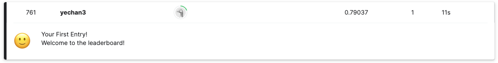

#!pip install autogluon.eda14wk-61: NLP with Disaster Tweets / 자료분석(Autogluon)
최규빈
2023-12-01
1. 강의영상
2. Imports
import numpy as np
import pandas as pd
import matplotlib.pyplot as plt
#---#
from autogluon.tabular import TabularPredictor
#---#
import warnings
warnings.filterwarnings('ignore')3. Data
!kaggle competitions download -c nlp-getting-startedWarning: Your Kaggle API key is readable by other users on this system! To fix this, you can run 'chmod 600 /home/coco/.kaggle/kaggle.json'
Downloading nlp-getting-started.zip to /home/coco/Dropbox/Class/STBDA23/posts
100%|████████████████████████████████████████| 593k/593k [00:00<00:00, 1.98MB/s]
100%|████████████████████████████████████████| 593k/593k [00:00<00:00, 1.97MB/s]!unzip nlp-getting-started.zip -d data Archive: nlp-getting-started.zip
inflating: data/sample_submission.csv
inflating: data/test.csv
inflating: data/train.csv df_train = pd.read_csv('data/train.csv')
df_test = pd.read_csv('data/test.csv')
sample_submission = pd.read_csv('data/sample_submission.csv')!rm -rf data
!rm nlp-getting-started.zip4. 분석
df_train.head()| id | keyword | location | text | target | |
|---|---|---|---|---|---|
| 0 | 1 | NaN | NaN | Our Deeds are the Reason of this #earthquake M... | 1 |
| 1 | 4 | NaN | NaN | Forest fire near La Ronge Sask. Canada | 1 |
| 2 | 5 | NaN | NaN | All residents asked to 'shelter in place' are ... | 1 |
| 3 | 6 | NaN | NaN | 13,000 people receive #wildfires evacuation or... | 1 |
| 4 | 7 | NaN | NaN | Just got sent this photo from Ruby #Alaska as ... | 1 |
df_test.head()| id | keyword | location | text | |
|---|---|---|---|---|
| 0 | 0 | NaN | NaN | Just happened a terrible car crash |
| 1 | 2 | NaN | NaN | Heard about #earthquake is different cities, s... |
| 2 | 3 | NaN | NaN | there is a forest fire at spot pond, geese are... |
| 3 | 9 | NaN | NaN | Apocalypse lighting. #Spokane #wildfires |
| 4 | 11 | NaN | NaN | Typhoon Soudelor kills 28 in China and Taiwan |
# step1 -- pass
# step2
predictr = TabularPredictor(label = 'target')
# step3
predictr.fit(df_train,num_gpus=1)
# step4
yhat = predictr.predict(df_test) No path specified. Models will be saved in: "AutogluonModels/ag-20231217_125246/"
Beginning AutoGluon training ...
AutoGluon will save models to "AutogluonModels/ag-20231217_125246/"
AutoGluon Version: 0.8.2
Python Version: 3.8.18
Operating System: Linux
Platform Machine: x86_64
Platform Version: #38~22.04.1-Ubuntu SMP PREEMPT_DYNAMIC Thu Nov 2 18:01:13 UTC 2
Disk Space Avail: 653.05 GB / 982.82 GB (66.4%)
Train Data Rows: 7613
Train Data Columns: 4
Label Column: target
Preprocessing data ...
AutoGluon infers your prediction problem is: 'binary' (because only two unique label-values observed).
2 unique label values: [1, 0]
If 'binary' is not the correct problem_type, please manually specify the problem_type parameter during predictor init (You may specify problem_type as one of: ['binary', 'multiclass', 'regression'])
Selected class <--> label mapping: class 1 = 1, class 0 = 0
Using Feature Generators to preprocess the data ...
Fitting AutoMLPipelineFeatureGenerator...
Available Memory: 121393.46 MB
Train Data (Original) Memory Usage: 2.2 MB (0.0% of available memory)
Inferring data type of each feature based on column values. Set feature_metadata_in to manually specify special dtypes of the features.
Stage 1 Generators:
Fitting AsTypeFeatureGenerator...
Stage 2 Generators:
Fitting FillNaFeatureGenerator...
Stage 3 Generators:
Fitting IdentityFeatureGenerator...
Fitting CategoryFeatureGenerator...
Fitting CategoryMemoryMinimizeFeatureGenerator...
Fitting TextSpecialFeatureGenerator...
Fitting BinnedFeatureGenerator...
Fitting DropDuplicatesFeatureGenerator...
Fitting TextNgramFeatureGenerator...
Fitting CountVectorizer for text features: ['text']
CountVectorizer fit with vocabulary size = 641
Stage 4 Generators:
Fitting DropUniqueFeatureGenerator...
Stage 5 Generators:
Fitting DropDuplicatesFeatureGenerator...
Types of features in original data (raw dtype, special dtypes):
('int', []) : 1 | ['id']
('object', []) : 2 | ['keyword', 'location']
('object', ['text']) : 1 | ['text']
Types of features in processed data (raw dtype, special dtypes):
('category', []) : 2 | ['keyword', 'location']
('category', ['text_as_category']) : 1 | ['text']
('int', []) : 1 | ['id']
('int', ['binned', 'text_special']) : 28 | ['text.char_count', 'text.word_count', 'text.capital_ratio', 'text.lower_ratio', 'text.digit_ratio', ...]
('int', ['text_ngram']) : 631 | ['__nlp__.05', '__nlp__.08', '__nlp__.10', '__nlp__.11', '__nlp__.15', ...]
3.0s = Fit runtime
4 features in original data used to generate 663 features in processed data.
Train Data (Processed) Memory Usage: 9.92 MB (0.0% of available memory)
Data preprocessing and feature engineering runtime = 3.02s ...
AutoGluon will gauge predictive performance using evaluation metric: 'accuracy'
To change this, specify the eval_metric parameter of Predictor()
Automatically generating train/validation split with holdout_frac=0.1, Train Rows: 6851, Val Rows: 762
User-specified model hyperparameters to be fit:
{
'NN_TORCH': {},
'GBM': [{'extra_trees': True, 'ag_args': {'name_suffix': 'XT'}}, {}, 'GBMLarge'],
'CAT': {},
'XGB': {},
'FASTAI': {},
'RF': [{'criterion': 'gini', 'ag_args': {'name_suffix': 'Gini', 'problem_types': ['binary', 'multiclass']}}, {'criterion': 'entropy', 'ag_args': {'name_suffix': 'Entr', 'problem_types': ['binary', 'multiclass']}}, {'criterion': 'squared_error', 'ag_args': {'name_suffix': 'MSE', 'problem_types': ['regression', 'quantile']}}],
'XT': [{'criterion': 'gini', 'ag_args': {'name_suffix': 'Gini', 'problem_types': ['binary', 'multiclass']}}, {'criterion': 'entropy', 'ag_args': {'name_suffix': 'Entr', 'problem_types': ['binary', 'multiclass']}}, {'criterion': 'squared_error', 'ag_args': {'name_suffix': 'MSE', 'problem_types': ['regression', 'quantile']}}],
'KNN': [{'weights': 'uniform', 'ag_args': {'name_suffix': 'Unif'}}, {'weights': 'distance', 'ag_args': {'name_suffix': 'Dist'}}],
}
Fitting 13 L1 models ...
Fitting model: KNeighborsUnif ...
Specified total num_gpus: 1, but only 0 are available. Will use 0 instead
Exception ignored on calling ctypes callback function: <function _ThreadpoolInfo._find_modules_with_dl_iterate_phdr.<locals>.match_module_callback at 0x7f472771f8b0>
Traceback (most recent call last):
File "/home/coco/anaconda3/envs/py38/lib/python3.8/site-packages/threadpoolctl.py", line 400, in match_module_callback
self._make_module_from_path(filepath)
File "/home/coco/anaconda3/envs/py38/lib/python3.8/site-packages/threadpoolctl.py", line 515, in _make_module_from_path
module = module_class(filepath, prefix, user_api, internal_api)
File "/home/coco/anaconda3/envs/py38/lib/python3.8/site-packages/threadpoolctl.py", line 606, in __init__
self.version = self.get_version()
File "/home/coco/anaconda3/envs/py38/lib/python3.8/site-packages/threadpoolctl.py", line 646, in get_version
config = get_config().split()
AttributeError: 'NoneType' object has no attribute 'split'
0.7283 = Validation score (accuracy)
0.77s = Training runtime
0.12s = Validation runtime
Fitting model: KNeighborsDist ...
Specified total num_gpus: 1, but only 0 are available. Will use 0 instead
Exception ignored on calling ctypes callback function: <function _ThreadpoolInfo._find_modules_with_dl_iterate_phdr.<locals>.match_module_callback at 0x7f471ea9d1f0>
Traceback (most recent call last):
File "/home/coco/anaconda3/envs/py38/lib/python3.8/site-packages/threadpoolctl.py", line 400, in match_module_callback
self._make_module_from_path(filepath)
File "/home/coco/anaconda3/envs/py38/lib/python3.8/site-packages/threadpoolctl.py", line 515, in _make_module_from_path
module = module_class(filepath, prefix, user_api, internal_api)
File "/home/coco/anaconda3/envs/py38/lib/python3.8/site-packages/threadpoolctl.py", line 606, in __init__
self.version = self.get_version()
File "/home/coco/anaconda3/envs/py38/lib/python3.8/site-packages/threadpoolctl.py", line 646, in get_version
config = get_config().split()
AttributeError: 'NoneType' object has no attribute 'split'
0.7402 = Validation score (accuracy)
0.1s = Training runtime
0.07s = Validation runtime
Fitting model: LightGBMXT ...
Specified total num_gpus: 1, but only 0 are available. Will use 0 instead
0.7953 = Validation score (accuracy)
0.55s = Training runtime
0.01s = Validation runtime
Fitting model: LightGBM ...
Specified total num_gpus: 1, but only 0 are available. Will use 0 instead
0.7992 = Validation score (accuracy)
0.66s = Training runtime
0.01s = Validation runtime
Fitting model: RandomForestGini ...
Specified total num_gpus: 1, but only 0 are available. Will use 0 instead
0.7808 = Validation score (accuracy)
0.63s = Training runtime
0.04s = Validation runtime
Fitting model: RandomForestEntr ...
Specified total num_gpus: 1, but only 0 are available. Will use 0 instead
0.7703 = Validation score (accuracy)
0.65s = Training runtime
0.03s = Validation runtime
Fitting model: CatBoost ...
Specified total num_gpus: 1, but only 0 are available. Will use 0 instead
0.8058 = Validation score (accuracy)
1.89s = Training runtime
0.02s = Validation runtime
Fitting model: ExtraTreesGini ...
Specified total num_gpus: 1, but only 0 are available. Will use 0 instead
0.7874 = Validation score (accuracy)
0.65s = Training runtime
0.04s = Validation runtime
Fitting model: ExtraTreesEntr ...
Specified total num_gpus: 1, but only 0 are available. Will use 0 instead
0.7835 = Validation score (accuracy)
0.64s = Training runtime
0.04s = Validation runtime
Fitting model: NeuralNetFastAI ...
Specified total num_gpus: 1, but only 0 are available. Will use 0 instead
No improvement since epoch 2: early stopping
0.7808 = Validation score (accuracy)
3.18s = Training runtime
0.01s = Validation runtime
Fitting model: XGBoost ...
Specified total num_gpus: 1, but only 0 are available. Will use 0 instead
0.7953 = Validation score (accuracy)
0.97s = Training runtime
0.01s = Validation runtime
Fitting model: NeuralNetTorch ...
Specified total num_gpus: 1, but only 0 are available. Will use 0 instead
0.727 = Validation score (accuracy)
6.51s = Training runtime
0.01s = Validation runtime
Fitting model: LightGBMLarge ...
Specified total num_gpus: 1, but only 0 are available. Will use 0 instead
0.8071 = Validation score (accuracy)
2.27s = Training runtime
0.01s = Validation runtime
Fitting model: WeightedEnsemble_L2 ...
0.8268 = Validation score (accuracy)
0.46s = Training runtime
0.0s = Validation runtime
AutoGluon training complete, total runtime = 24.02s ... Best model: "WeightedEnsemble_L2"
TabularPredictor saved. To load, use: predictor = TabularPredictor.load("AutogluonModels/ag-20231217_125246/")
Exception ignored on calling ctypes callback function: <function _ThreadpoolInfo._find_modules_with_dl_iterate_phdr.<locals>.match_module_callback at 0x7f471e9b2e50>
Traceback (most recent call last):
File "/home/coco/anaconda3/envs/py38/lib/python3.8/site-packages/threadpoolctl.py", line 400, in match_module_callback
self._make_module_from_path(filepath)
File "/home/coco/anaconda3/envs/py38/lib/python3.8/site-packages/threadpoolctl.py", line 515, in _make_module_from_path
module = module_class(filepath, prefix, user_api, internal_api)
File "/home/coco/anaconda3/envs/py38/lib/python3.8/site-packages/threadpoolctl.py", line 606, in __init__
self.version = self.get_version()
File "/home/coco/anaconda3/envs/py38/lib/python3.8/site-packages/threadpoolctl.py", line 646, in get_version
config = get_config().split()
AttributeError: 'NoneType' object has no attribute 'split'5. 제출
sample_submission| id | target | |
|---|---|---|
| 0 | 0 | 0 |
| 1 | 2 | 0 |
| 2 | 3 | 0 |
| 3 | 9 | 0 |
| 4 | 11 | 0 |
| ... | ... | ... |
| 3258 | 10861 | 0 |
| 3259 | 10865 | 0 |
| 3260 | 10868 | 0 |
| 3261 | 10874 | 0 |
| 3262 | 10875 | 0 |
3263 rows × 2 columns
sample_submission['target'] = yhat
sample_submission.to_csv("submission.csv",index=False)!kaggle competitions submit -c nlp-getting-started -f submission.csv -m "오토글루온, TabularPredictor"Warning: Your Kaggle API key is readable by other users on this system! To fix this, you can run 'chmod 600 /home/coco/.kaggle/kaggle.json'
100%|██████████████████████████████████████| 22.2k/22.2k [00:01<00:00, 11.8kB/s]
Successfully submitted to Natural Language Processing with Disaster Tweets
761/10940.6956124314442413별로네..